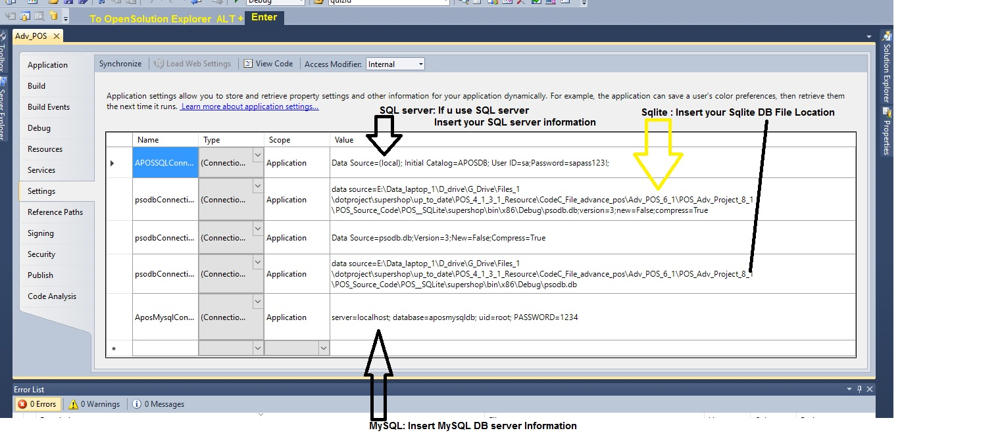
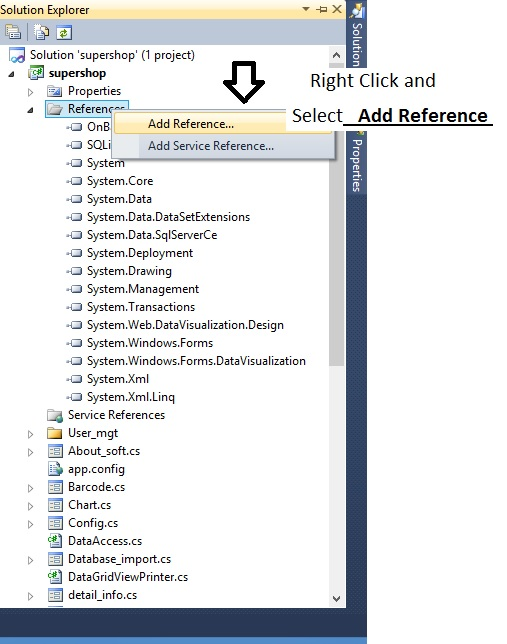
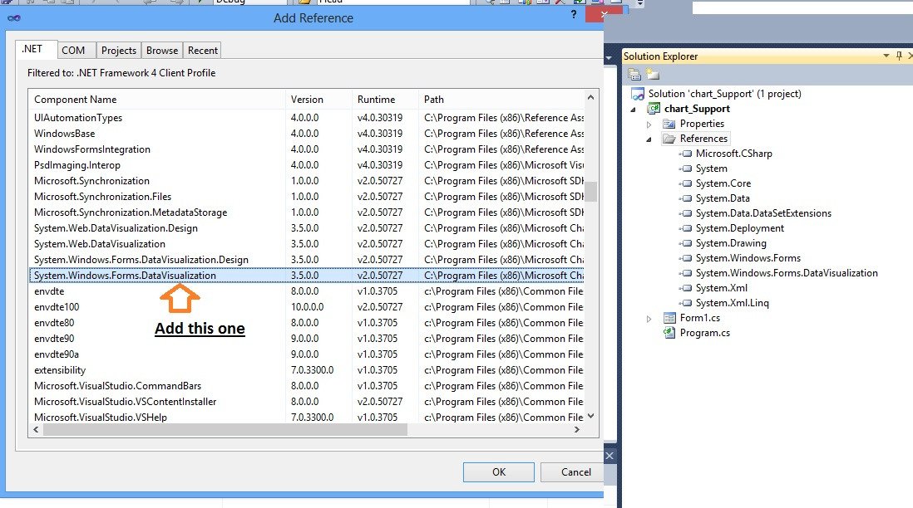

Video Tutorial
Manual Process
===================
If you need for client
Please Copy whole \POS__SQLite\supershop\bin\x86\ --> Debug folder and make a shortcut of Adv_POS.exe file -- not this one (Adv_POS.exe.config)
paste to desktop or anywhere where do you want.
and make zip file
Step1: Open SalesRegister/SalesRegister.cs file with Visual studio 2010
Step2: Add this code after line 558 or UnComment Existing code -- find in vatcal() method line 535
///////Pole shows Price value | if you have pole device please UnComment below code
SerialPort sp = new SerialPort();
sp.PortName = "COM1"; ////Insert your pole Device Port Name E.g. COM4 -- you can find from pole device manual
sp.BaudRate = 9600; // Pole Bound Rate
sp.Parity = Parity.None;
sp.DataBits = 8; // Data Bits
sp.StopBits = StopBits.One;
sp.Open();
sp.WriteLine(lblTotalPayable.Text);
sp.Close();
sp.Dispose();
sp = null;
To open => solution explorer alt + ENTER => right click on Adv_POS => click properties => Settings tab

//Its absolute Connection String for MS SQL Server 2008 - Upto -- Internal connectionstring - u can't change Data source info after compile/Debug
static string _ConnectionString = "Data Source=(local);Initial Catalog=APOSDB; User ID=sa;Password=sapass123!";
//"Data Source= (local) /or .\\SQLEXPRESS or your DB IP address or your SQL server name; for External database use only single dot .\SQLEXPRESS or Data Source=. --//(only dot)
//Initial Catalog= Database Name;
//User ID= DB User ID;
//Password= DB user password";
//If your MSSQL server have window authentication (MSSQL server 2008 open without Password) please use this one
static string _ConnectionString = "Data Source=(local); Initial Catalog=APOSDB; ";
// Connection String for SQlite Edition
static string _ConnectionString = @"Data Source=psodb.db;Version=3;New=False;Compress=True";
//This is Mysql Database Access class -- leave empty if your Mysal does not has PASSWORD
static string _ConnectionString = "server=localhost; database=aposmysqldb; uid=root; PASSWORD=";
// FOR SQL - Use for Adv_POS.exe.config file - External connectionstring - you can change Database server info after compile/Debug
static string _ConnectionString = supershop.Properties.Settings.Default.APOSSQLConnectionString;
// FOR MYSQL - Use for Adv_POS.exe.config file - External connectionstring - you can change Database server info after compile/Debug
static string _ConnectionString = supershop.Properties.Settings.Default.AposMysqlConnectionString;
// FOR SQLite - Use for Adv_POS.exe.config file - External connectionstring - you can change Database server info after compile/Debug
static string _ConnectionString = supershop.Properties.Settings.Default.psodbConnectionString1;
N:B: if use use external connectionstring you have to change also in your app.config file or follow avobe image
"add name="supershop.Properties.Settings.APOSSQLConnectionString" connectionString="Data Source=(local); Initial Catalog=APOSDB; User ID=sa;Password=sapass123!;" providerName="Sql.Data.MySqlClient" /"
Please check video tutorial
Connectionstring miscellaneous - 33:54
How to change External connectionstring - 36:17
1. Please install " MSChart.exe " File
2. Open your Project
3. Solution Explorer -> Right Click on References Folder Select Add Reference
And add - > System.windows.Forms.DataVisualization.
or Follow Image 1.jpg and 2.jpg


Install reporviewer.exe